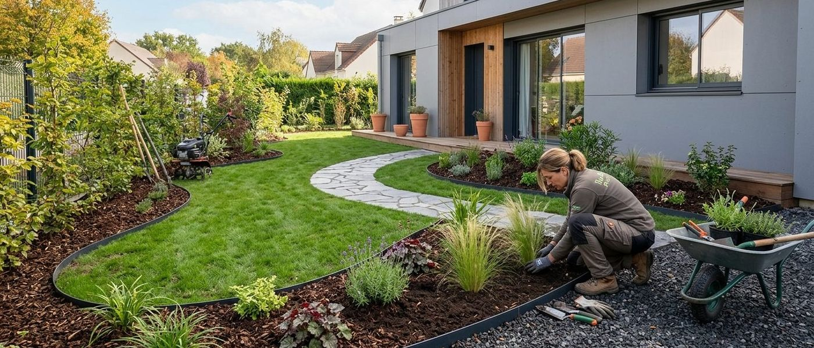
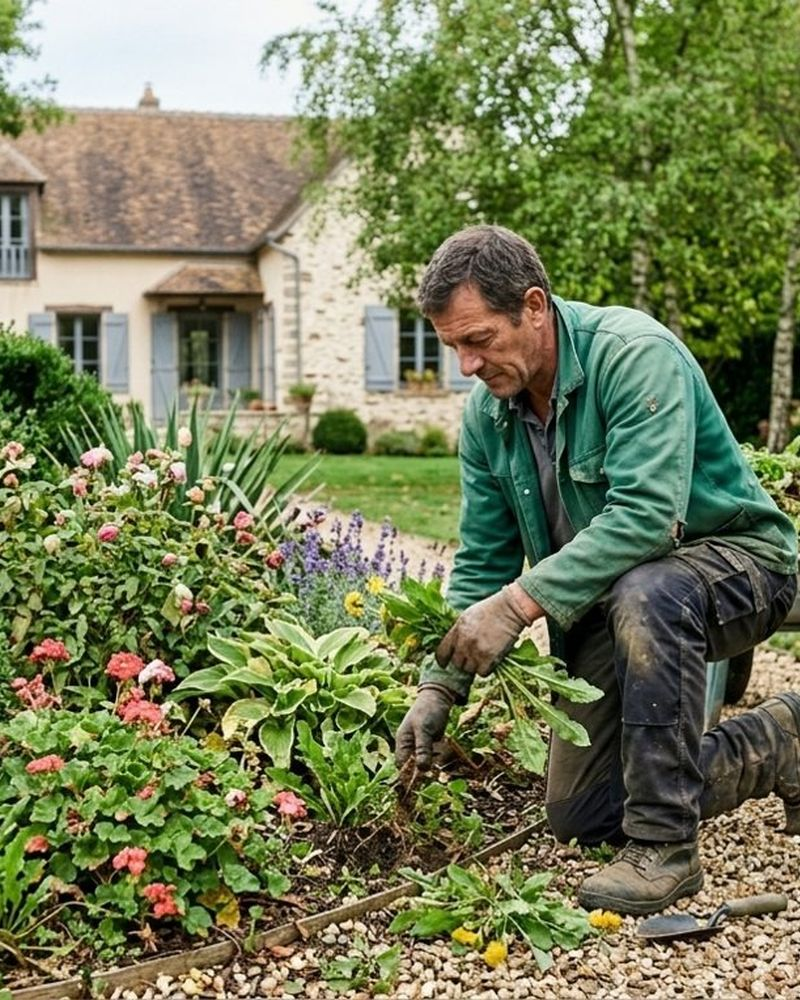
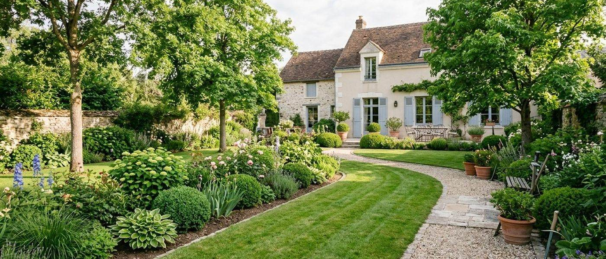

Élagage et abattage
Un élagueur grimpeur qualifié, après diagnostic de vos arbres. Dessouchage et rognage de souche également.
En savoir plus →Paysagiste à Saint-Maurice-Montcouronne (91)
Installé depuis 2016, Borval Paysage crée et entretient les espaces verts des particuliers, des professionnels et des collectivités autour de Saint-Chéron et de Dourdan.

Nos prestations
Des prestations sur mesure, adaptées à votre espace vert.
Un élagueur grimpeur qualifié, après diagnostic de vos arbres. Dessouchage et rognage de souche également.
En savoir plus →
Massifs, rocailles, plantations, gazon, terrasses et piscines, selon un plan paysager adapté à votre maison.
En savoir plus →
Annuel ou ponctuel, pour résidence principale ou secondaire, avec un cahier des charges selon la saison.
En savoir plus →
Notre façon de travailler
Chaque jardin a son potentiel : nous le regardons avant d’agir.
Avant les travaux, votre jardinier paysagiste étudie le potentiel de votre terrain.
Nous proposons un plan et une composition végétale en harmonie avec le style architectural et la nature environnante.
Nous diagnostiquons l’état de vos arbres, puis choisissons la technique d’élagage adaptée.
Pour l’entretien, un cahier des charges détaille les prestations selon la saison et les besoins de votre jardin.

À propos
Borval Paysage est implanté depuis 2016 à Saint-Maurice-Montcouronne, près de Saint-Chéron et de Dourdan. L’entreprise assure création, entretien et élagage.
Partenaire de Jardiniers Professionnels, coopérative de professionnels à domicile, et affiliée aux services à la personne, elle fait bénéficier ses clients d’une réduction d’impôt de 50 %.
Zone et crédit d’impôtContact
Appelez-nous ou remplissez le formulaire en ligne : nous vous répondons pour établir un devis.